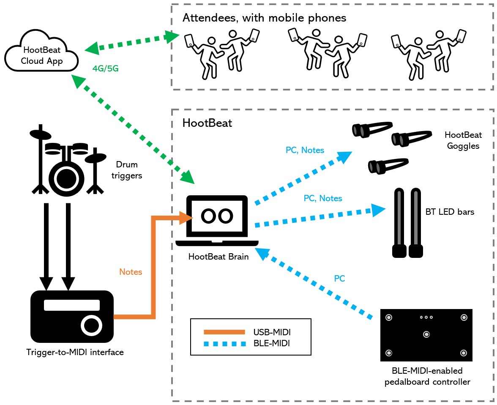

HootBeat: A Platform for MIDI-Controlled Lighting Wearables
JP Carrascal
A platform for MIDI-controlled lighting wearables.

Introduction
HootBeat is a platform for MIDI-controlled lighting wearable and ambient devices. It lies at the intersection of technology, performing arts and fashion. Wearable technologies present a unique opportunity to performing arts in general and live music in particular. There is a whole generation of new wearable music instruments that take advantage of electronic technology for enhanced sound control. Some examples include the Mi.Mu gloves and the Wave and Neova rings. On the visual side, however, musicians do not have many options available. We aim at providing a solution with BLE-MIDI-powered wearables that feature RGB LED technology to augment the music performance. HootBeat wearables are, essentially, "lighting musical instruments". The system does not require a lighting technician to be set up. Instead, it uses interfaces already familiar to performing musicians, including drum triggers and a pedalboard controller.
Additionally, HootBeat allows device control from the audience. This means that attendees can take control of the light show, adding an unprecedented level of interaction between the performing artist and the audience.
System Description
The prototype consists of these elements:
• The Brain, running on a computer with Wi-Fi and Bluetooth (for BLE-MIDI capabilities), a MIDI-USB interface, and custom software. It is the main hub of the system, connecting and orchestrating the other components.
• Several HootBeat Goggles equipped with LED rings. The Goggles are built around the ESP32 microcontroller to wirelessly connect to the Brain via BLE-MIDI. They feature multiple RGB LEDs in a ring configuration (one ring per eye), allowing to display vivid animations using a wide variety of colors. Currently developed animations include reacting to drum beats, oscillations between colors, and several rotating patterns.
• A custom-made pedalboard controller with BLE-MIDI capabilities (via CME's WIDI Jack). Built with an Arduino Micro microcontroller, this device allows to select different programs via MIDI Program Change messages. This way, different combinations of animations and colors can be used for different songs.
• A trigger-to-MIDI interface (currently a Roland TM-2) translates trigger signals from an acoustic drum kit to MIDI. The TM-2 plugs into the Brain with the MIDI-USB interface. Alternatively, an electronic drum kit can be also used to trigger light animations.
• A Cloud-based application for orchestration interaction with the audience.
Demos
Live Performance Demo
• Spacebarman, live in Barcelona (Festes de Maig, May 21st, 2022)
The demos below used an electronic drum kit as opposed to an acoustic one with triggers.